|
Roda JC - NEC (1-0) 29 april 2005 |
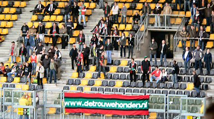
Een kleine 100 trouwe honden uit Nijmegen en omgeving.
Roda JC
- NEC (1-0) 29 april 2005 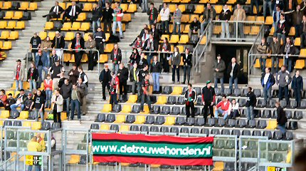
Een kleine 100 trouwe honden uit Nijmegen en omgeving.
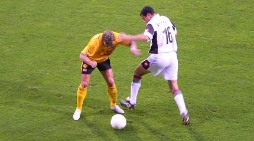
Bodnar in duel met Tininho.
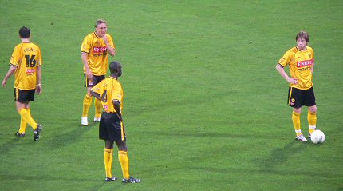
Top-overleg bij een vrije trap.
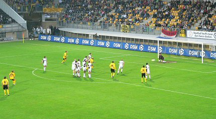
Het kanon treft niet altijd doel...
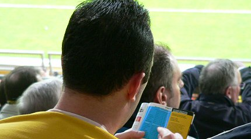
De eerste helft bood slechts onsamenhangend voetbal en dan ga je
dus
even het programma-blaadje doornemen.
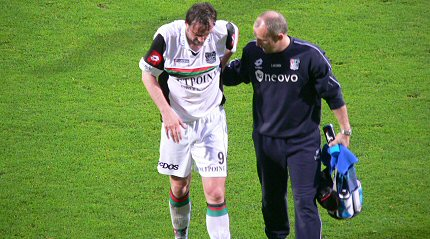
Owww (1).
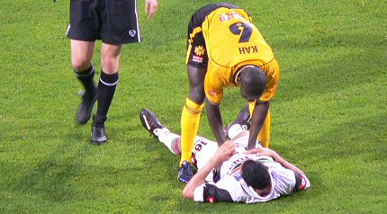
Owww (2).
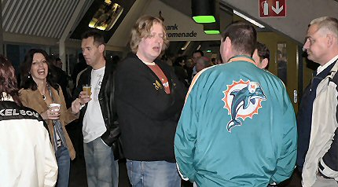
Ruststand: 0-0, de deskundigen analyseren de wedstrijd.
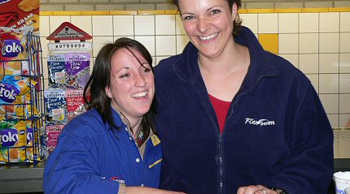
Linda lacht; binnenkort meer Linda.
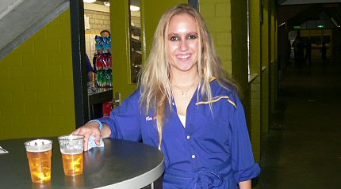
Beer-provider Chaggith is ook blij; binnenkort meer Chaggith.
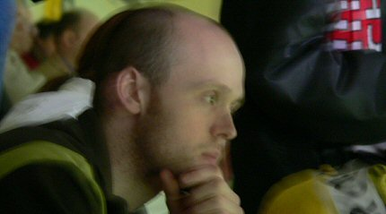
De tweede helft is aantrekkelijker. De altijd vernieuwende
Rick ziet het
weer helemaal zitten.
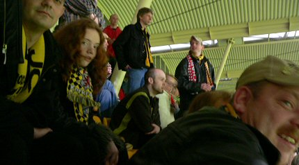
Blije gezichten in Z16.
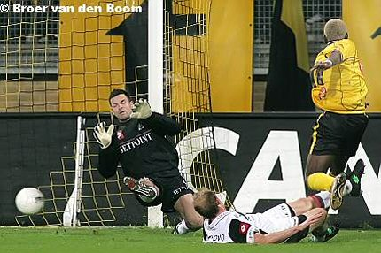
Afgekeurde goal van Kone.
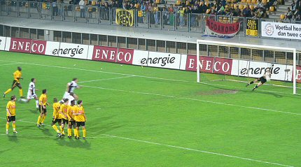
Knappe redding van Kujovic.
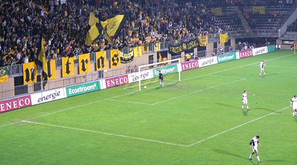
In de 77e min. schuift Sergio de bal naast Gentenaar: 1-0.
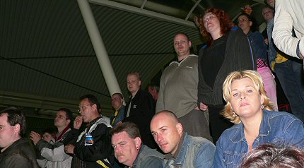
Tenminste niet voor niks gezongen...
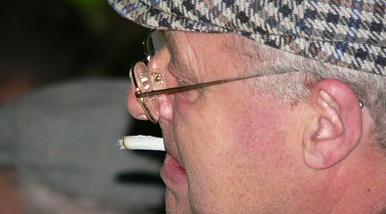
Als ik dit wist had ik mijn oorhaar wel getrimd.
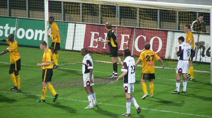
NEC kreeg aardig wat hoekschoppen. Dit is een van de laatste. De
club uit
Nijmegen verzilverde er geen een.
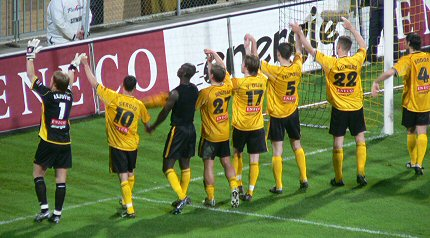
Oost, zuid en west werden bedankt.
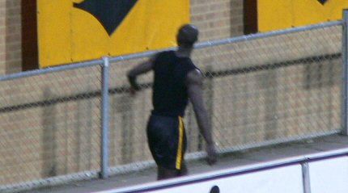
P-M Kah gooit zijn shirt naar de supporters op west.
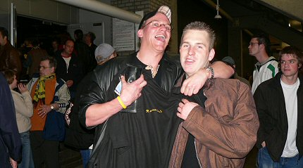
De trotse eigenaar van een M.O. polo-shirt.
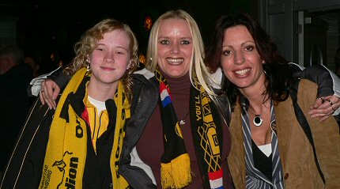
De nieuwe huiskamervraag: Wat is de overeenkomst tussen deze drie
vrolijke meisjes?
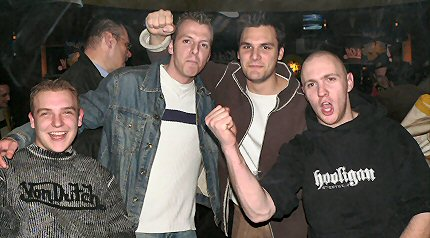
Hooooo....
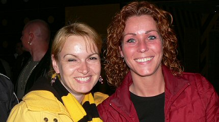
Niet vergeten te mailen he!
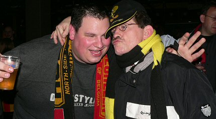
De liefdesrelatie tussen Koffieboer en Tweety eindelijk bewezen!
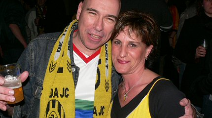
Op de foto met de queen van de KickOff.
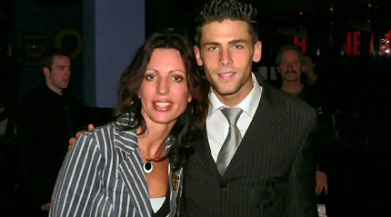
Colinet en Luijpers bezochten de KickOff.
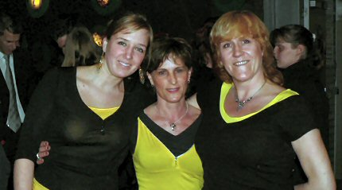
De correct geklede KO-crew.
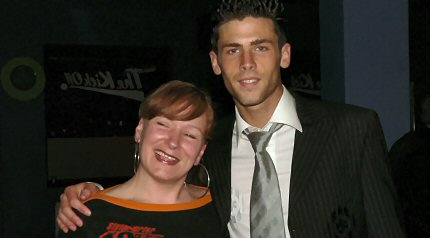
Jerome is behoorlijk populair bij het vrouwenfront!
Zeer populair! Waar zijn de Colinet-girls???
Luijp is meer in trek bij de boys...
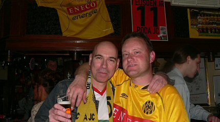
Afbieren bij Rock-Inn met Popeye Theo.
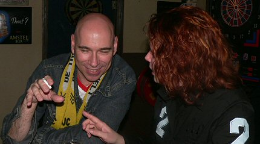
Zware onderhandelingen met Verena, maar vooralsnog wil het niet
lukken.
Kwestie van geduld, rustig wachten op den daag....